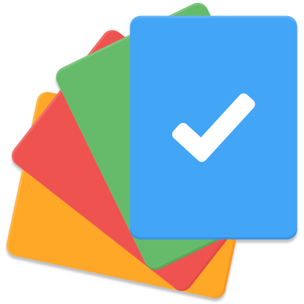

<!-- Toolbar -->
<div class="toolbar" role="banner">
  
  <span>TODO APPS</span>
  <div class="spacer"></div>
  <a aria-label="Angular on twitter" target="_blank" rel="noopener" href="https://twitter.com/angular" title="Twitter">
  </a>
</div>
<div style="margin:100px 10px 10px 10px" role="main">
  <div class="row">

  </div>
  <h2>Create New ToDo </h2>
  <p>Write your job !</p>
<app-create-todo></app-create-todo>
  <!-- Resources -->
  <app-todo-list></app-todo-list>
<app-footer></app-footer>

</div>
